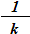
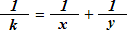

|
Problem A: Fractions Again?! |
|
Time limit: 1 second |
It is easy to see that for every fraction in the form  (k > 0), we can always find two positive integers
x and y, x ≥ y, such that:
.
Now our question is: can you write a program that counts how many such pairs of x and y there are for any given k?
Input contains no more than 100 lines, each giving a value of k (0 < k ≤ 10000).
For each k, output the number of corresponding (x, y) pairs, followed by a sorted list of the values of x and y, as shown in the sample output.
2 12
2 1/2 = 1/6 + 1/3 1/2 = 1/4 + 1/4 8 1/12 = 1/156 + 1/13 1/12 = 1/84 + 1/14 1/12 = 1/60 + 1/15 1/12 = 1/48 + 1/16 1/12 = 1/36 + 1/18 1/12 = 1/30 + 1/20 1/12 = 1/28 + 1/21 1/12 = 1/24 + 1/24